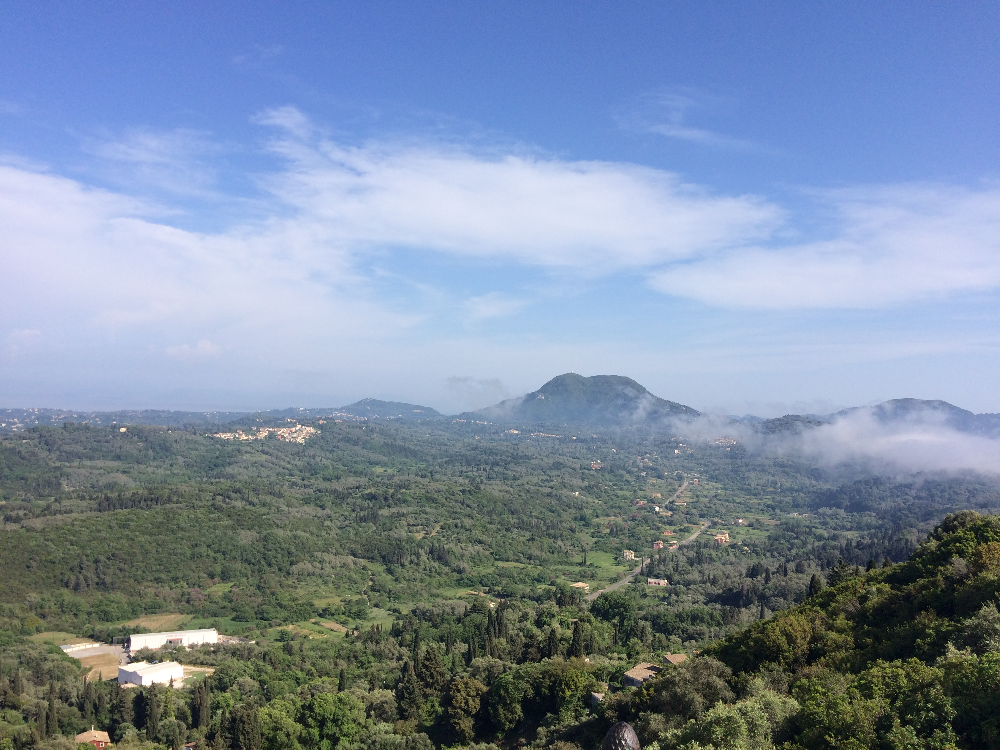
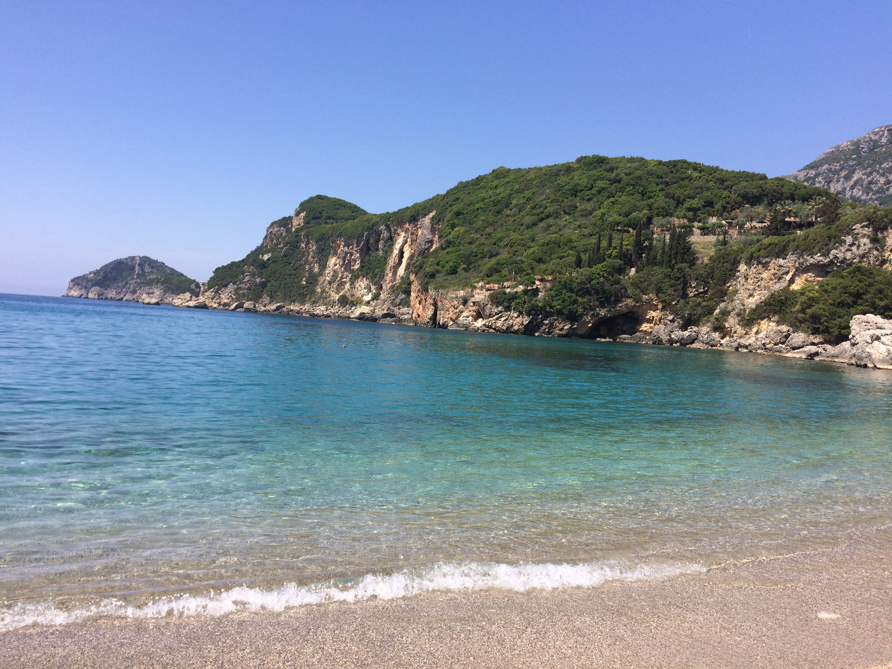

Author: Katarzyna Adamczyk
Corfu


I have visited Corfu in the end of April 2018. The weather was pleasant - it was sunny and warm. At first glance, I enjoyed the stay there as the surroundings were really nice. Please see the pictures above. |
|---|